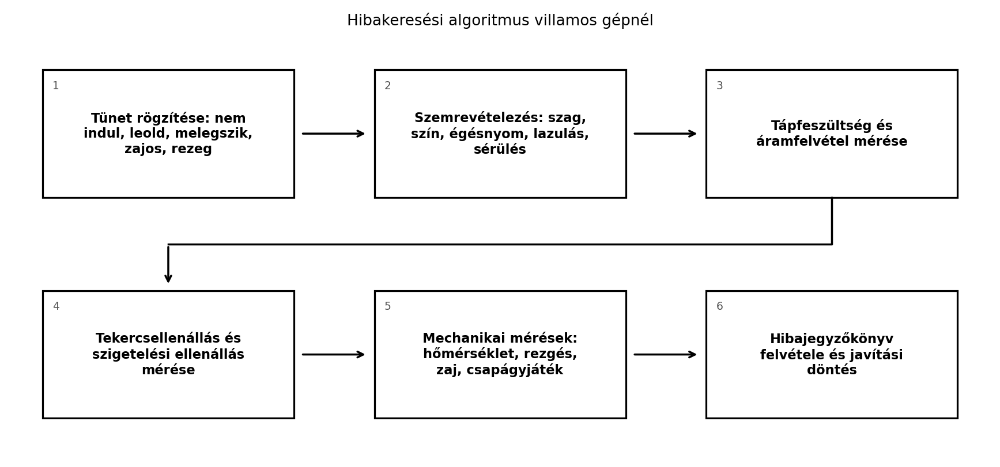
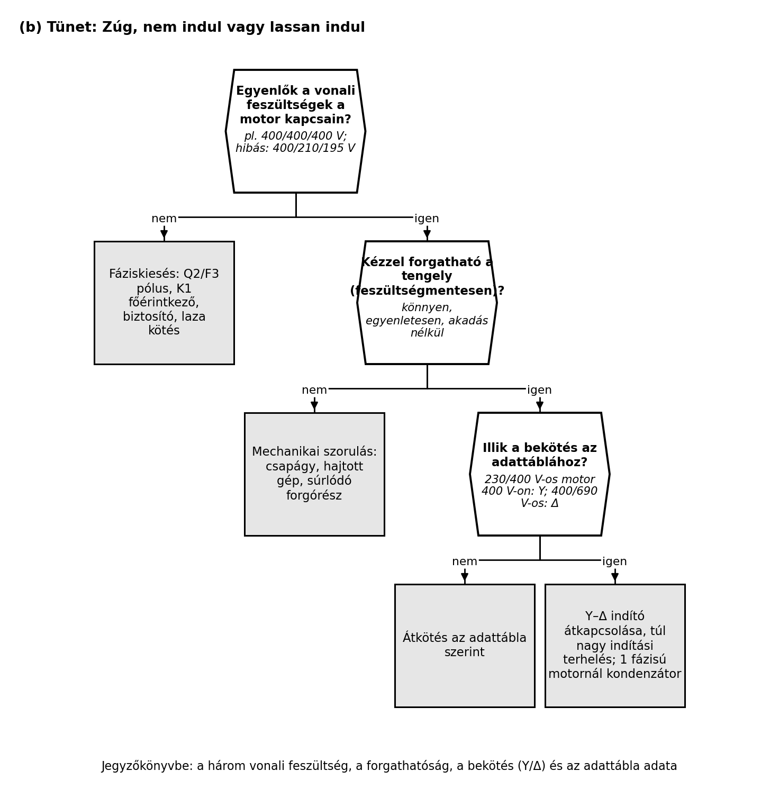
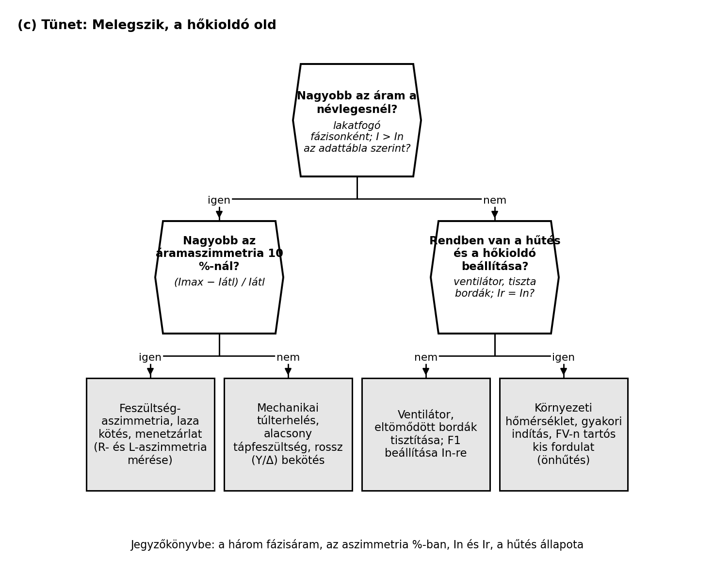
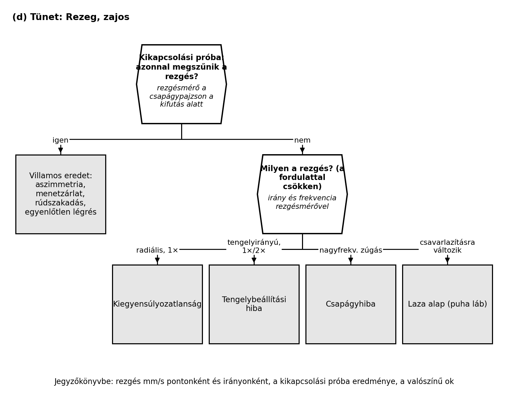
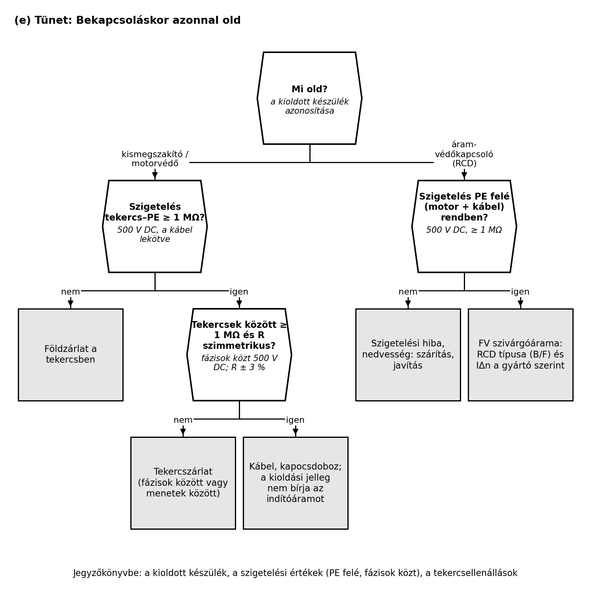

Egy üzem csarnokában a szalagot hajtó aszinkron motor időnként leold, a csapágypajzs pedig feltűnően meleg. A gépkezelő annyit tud mondani: „néha búg, aztán lekapcsol a védelem”. Ilyenkor a szerelő feladata nem az, hogy azonnal kicseréljen egy alkatrészt, hanem az, hogy szisztematikusan, mérésekkel alátámasztva derítse ki a hibát, és ezt hibajegyzőkönyvben dokumentálja. Ha kihagy egy mérési lépést, könnyen téves javítást végez, például új motort szerel be, miközben csak egy rossz kötés vagy egy fáziskiesés okozta a túlterhelést.
A diagnosztika nem tippelgetés: tünet → hipotézis → mérés → értékelés → döntés láncolat. Ezt az alfejezetben ezzel a logikával építjük fel. A módszer később a Gépek megbontása, javítása és üzembe helyezése alfejezetben folytatódik, mert csak a diagnózis után lehet felelősen szétszedni és javítani egy gépet.
A villamos gép hibakeresése egy szűkülő folyamat. Először a külső és egyszerű okokat zárjuk ki, majd haladunk a belső, költségesebb hibák felé.

Az ábra nem egy merev recept, hanem gondolkodási sorrend: ha már az első lépésben egyértelmű égésnyomot látsz, akkor gyorsabban jutsz a hibához, de a jegyzőkönyvhöz akkor is rögzítened kell a mért értékeket. A lineáris sor csak áttekintés: a tényleges mérési sorrend a tünettől függ. Az öt leggyakoribb tünet döntési fáját – mérésekkel és elvárt értékekkel – a mérések tárgyalása után, a hibafák szakaszban találod.
Definíció. Villamos gép diagnosztikája az üzem közben vagy kikapcsolt állapotban végzett szemrevételezés, villamos és mechanikai mérések, valamint az üzemi előzmények alapján végzett hibafeltárás, amelynek célja a hibás részegység, a kiváltó ok és a szükséges javítás meghatározása.
A hibákat két nagy csoportba soroljuk:
A két csoport nem válik el élesen: egy csapágyhiba megnövekedett súrlódáson keresztül magasabb áramfelvételhez és melegedéshez vezet, amit a hővédelem végül leold; a látszólag elektromos tünet mögött tehát mechanikai ok is állhat.
Szabály. A hibakeresés mindig a könnyen ellenőrizhető, olcsón javítható és nagy gyakoriságú okokkal kezdődjön: kapocs, csatlakozó, biztosíték, kapcsoló, majd haladjon a tekercsek, csapágyak és a forgórész felé.
A szemrevételezés a leggyorsabb és legolcsóbb vizsgálat, ezért mindig ezzel kezdünk. Kikapcsolt, feszültségmentesített állapotban vizsgáljuk:
A szemrevételezés eredményét fényképpel és rövid leírással rögzítsd a hibajegyzőkönyvben. A fénykép nem helyettesíti a mérést, de a javítás előtti állapotot bizonyítja.
A mérőműszer kiválasztása a mérendő mennyiségtől és a környezettől függ.
Szabály. Villamos gép diagnosztikájához legalább az alábbi műszerekre van szükség:
A mérési kategória fontosságát a Multiméter, lakatfogó és mérési kategóriák alfejezet részletezi; itt elég annyi: hálózati méréshez soha ne használj CAT I besorolású műszert, mert az nem biztonságos a hálózati tranziens túlfeszültségek ellen.
Szabály. A szigetelési ellenállást csak feszültségmentesített állapotban szabad mérni. A gép kapcsait le kell választani a hálózatról, mert a hálózat felé folyó vezetékek és a beépített védelmi készülékek meghamisítják az eredményt.
A mérés menete:
Az alábbi képsor a mérést a kapocstáblán követi (felső sor W2–U2–V2, alsó sor U1–V1–W1): (1) leválasztás, lezárás, a feszültségmentesség ellenőrzése, a tápvezetékek (L1 bn, L2 bk, L3 gy) lekötése, a PE-ér bekötve marad; (2) a hidak eltávolítása; (3) tekercs–test mérés U1–PE, majd V1–PE, W1–PE; (4) tekercsek közötti mérés U1–V1, V1–W1, W1–U1; (5) kisütés, majd a hidak és az erek visszakötése a fénykép szerint.
A leggyakoribb hiba, hogy a tápvezetékek bekötve maradnak: ekkor a mérés a kábelt és a kapcsolókészülékeket is méri, és az eredmény hamis. Visszakötés után a PE folytonosságát is mérd meg. A HTML-kiadásban a lépések egyenként, magyarázattal lejátszhatók.
Összefüggés. A szigetelési ellenállás értéke erősen hőmérsékletfüggő: meleg gépen kisebb, hideg gépen nagyobb. Ezért a mérési jegyzőkönyvben mindig rögzíteni kell a tekercs hőmérsékletét, és az eredményt a gyártói/szabványos hivatkozási hőmérsékletre kell átszámítani vagy a mérési feltétellel együtt értelmezni. A hőmérséklet-korrekció ökölszabályát, a szárítás közbeni követést és a polarizációs indexet a Tekercselés, impregnálás, csapágyak és szénkefe alfejezet mutatja be.
Átszámítás és trend. Tájékoztató ökölszabály: a szigetelési ellenállás kb. 10 K hőmérséklet-emelkedésenként feleződik, ezért az összehasonlításhoz 40 °C-ra számítunk át: (ellenőrizendő: MSZ EN 60034-27-4, IEEE 43, gyártói előírás). Ugyanannak a motornak négy éves sora (példaadat):
| Év | Mért érték | Tekercshőmérséklet | 40 °C-ra számítva |
|---|---|---|---|
| 2023 | 180 MΩ | 18 °C | ≈ 39 MΩ |
| 2024 | 95 MΩ | 25 °C | ≈ 34 MΩ |
| 2025 | 40 MΩ | 30 °C | ≈ 20 MΩ |
| 2026 | 9 MΩ | 35 °C | ≈ 6,4 MΩ |
A nyers sor (180-ról 9 MΩ-ra, huszadára) túlzottan riasztó lenne, de a korrigált sor is gyorsuló csökkenést mutat: a következő leálláskor tisztítás, szükség szerint szárítás és polarizációs index (PI) mérés indokolt. A PI a 10 perces és az 1 perces érték hányadosa, a DAR a 60 s-os és a 30 s-os értéké; az értékelés határait és a mintapéldákat a Tekercselés, impregnálás, csapágyak és szénkefe alfejezet szárítási része adja. A jegyzőkönyv szigetelésmérési sorába ezért mindig három adat kerüljön: mért érték / tekercshőmérséklet / 40 °C-ra számítva (lásd a kitöltött mintát lentebb).
Tájékoztató jelleggel: kisfeszültségű aszinkron motornál a szigetelési ellenállás néhány MΩ felett elfogadható, 1 MΩ alatt viszont a gépet további vizsgálat nélkül ne indítsd; a pontos határértéket a gép gyártója és az aktuális szabvány adja meg (ellenőrizendő).
A tekercsellenállás-mérés a tekercs szakadásának, rövidzárlatának és az aszimmetrikus tekercselésnek a kimutatására szolgál.
Szabály. Háromfázisú motornál a három fázistekercs ellenállásának közel azonosnak kell lennie (a gyártói tűrés szerint; tanulási ökölszabály: az átlagtól való legnagyobb eltérés 2–3 % felett vizsgálandó, 5 % felett hibás (ellenőrizendő: gyártói előírás)). Egy fázis szakadása végtelen nagy ellenállást ad; tekercszárlat (menetzárlat) esetén az adott fázis ellenállása kisebb lehet; a test felé mért szigetelési ellenállás ettől gyakran nem változik, ezért a menetzárlatot az ellenállás-aszimmetria, az áramaszimmetria és szükség esetén lökőfeszültséges (surge) tekercsvizsgálat mutatja ki.
Csillag- vagy delta kapcsolású motornál a kapocsdobozban a tekercsek végét és elejét lehet mérni. A kapocsjelölés: csillagnál U1–U2, V1–V2, W1–W2; deltánál U–V, V–W, W–U hozzáférhető a sorkapcsokon. A pontos méréshez a kapocsdoboz bekötését fel kell ismerni, mert a merev hidak eltávolítása nélkül a belső kapcsolás befolyásolja az eredményt. Ezt a Kapocsdoboz, csillag–delta bekötés és forgásirány alfejezet tárgyalja.
Számítás. Adott egy csillagkapcsolású, 3 kW-os motor. A kapocsdobozban mérjük: U1–U2: 2,45 Ω, V1–V2: 2,48 Ω, W1–W2: 2,41 Ω.
Definíció. Ebben a könyvben az aszimmetria az átlagtól való legnagyobb eltérés és az átlag hányadosa százalékban: (ellenőrizendő: MSZ EN 60034 sorozat vonatkozó része / gyártói előírás). A határértékek (tekercsellenállás néhány %, áram 10 %) erre a definícióra vonatkoznak; a (max − min)/átlag hányados ennek kb. kétszerese, ezért azt nem használjuk.
Ellenőrzés: ugyanezt a motort delta kapcsolásba kötve mérjük U–V: 1,60 Ω, V–W: 1,64 Ω, W–U: 1,61 Ω. Az átlag 1,617 Ω; az átlagtól való legnagyobb eltérés 0,023 Ω, azaz 1,4 %. Deltában két kapocs között egy fázistekercs és a másik kettő soros eredője van párhuzamosan: , ami egyezik a mért 1,617 Ω átlaggal. Tehát delta kapcsolásban a kapocsellenállás kisebb, mint a tekercsellenállás, és a számított érték a bekötésnek megfelel.
Miért rejtőzik a menetzárlat az ellenállásban? Ha egy 50 menetes tekercsrészben egyetlen menet zárlatos, az érintett rész ellenállása kb. 2 %-kal csökken, a teljes fázisé még ennél is kevesebbel – ez a mérési bizonytalanság határán van. A zárlatos menet viszont a tekercs induktivitását és impedanciáját nagyobb mértékben változtatja, mert benne nagy köráram indukálódik, amely a fluxus ellen hat, és üzemben helyi melegedést okoz.
Impedanciamérés törpefeszültséggel. Leválasztott, kisütött motoron, a hidak eltávolítása után LCR-mérővel, vagy 12–24 V AC biztonsági transzformátorról fázisonként mérjük a feszültséget és az áramot: . Az eredmény a forgórész helyzetétől is függ, ezért a tengelyt kézzel több helyzetbe forgatva mérj. A fázisok közti kb. 5–10 %-nál nagyobb eltérés gyanús (ellenőrizendő: műszer- és gyártói útmutató). Példa (példaadat): , , . Az átlag 14,37 Ω, a legnagyobb eltérés 1,47 Ω, azaz kb. 10 %: a W tekercs gyanús.
Lökőfeszültséges (surge) vizsgálat. A műszer két tekercsre azonos feszültségimpulzust ad, és a lecsengő rezgés hullámformáit veti össze. Azonos tekercseknél a görbék fedik egymást; eltérő frekvencia vagy csillapítás menet- vagy csoportzárlatra utal. Ez nagyfeszültségű vizsgálat: csak erre képzett személy végezheti, a gyártói utasítás szerint, elkerített mérőhelyen.
Forgórész-rúdszakadás. A kalickás forgórész elrepedt rúdja vagy rövidre záró gyűrűje tipikus jelei: lassú, erőtlen felfutás, terhelés alatt lüktető zaj és rezgés, az állórészáram lassú lengése frekvenciával. Terhelt motoron lakatfogóval a kijelző vagy a mutató lengése figyelhető meg. Példa: Hz, esetén Hz. Műhelyben a kiszerelt forgórész vizsgálható növesztővassal (growler), vagy az állórész egy fázisára adott kisfeszültséggel, a tengely lassú forgatása közben: ha az áram a forgórész helyzetével feltűnően változik, rúdhiba gyanítható (műhelyi módszer, gyártói előírás szerint).
| Hibakép | R | Z / L | Szigetelés | Üzemi áram | Jellemző mérés |
|---|---|---|---|---|---|
| menetzárlat | alig változik | egy fázis kisebb | gyakran jó | aszimmetrikus, nagy | Z/L-mérés, surge |
| fázisok közti zárlat | kisebb | eltérő | fázisok közt rossz | nagy, kiold | szigetelés fázisok közt |
| testzárlat | változatlan lehet | – | PE felé rossz | RCD vagy védelem old | szigetelés PE felé |
| tekercsszakadás | végtelen | végtelen | jó lehet | egy fázis 0 | ellenállás |
| rúdszakadás | változatlan | helyzetfüggő | jó | lassan leng () | lakatfogó terhelve, growler |
Az áramfelvétel mérése a motor terhelés alatti állapotának leggyorsabb diagnosztikai eszköze.
Szabály. Háromfázisú motornál mind a három fázis áramát meg kell mérni lakatfogóval. A fázisáramok közötti eltérés aszimmetriát jelez; tartósan 10 % feletti fázisáram-eltérés már hibás állapotra utal (pl. fázisfeszültség-aszimmetria vagy tekercsprobléma) (ellenőrizendő: a gép gyártói adatai és a hálózati engedélyes előírása).
Megjegyzés. Az áramfelvétel méréséhez a mérési pontot a tápvezetéken, nem a védővezetőn vagy a nullavezetőn kell kiválasztani. A lakatfogót mindig a fázisvezető körül zárjuk; ha a három fázis közös csomópontja köré fogunk, az eredő nulla lesz, ami téves következtetésre vezet.
Az alábbi ábra felülnézetben, az erek keresztmetszetével mutatja a helyes és a hibás fogást: helyesen a pofa egyetlen fázisvezetőt fog körül (a, a példa szerinti 12,3 A); ha mindhárom fázis (b) vagy a teljes köpenyes kábel (c) a pofában van, a kijelző közel 0 A-t mutat.
Az üzem közbeni árammérést csak jogosult személy végezheti, CAT III/IV műszerrel, a szigetelt éren, a csupasz részektől távol. Mindhárom fázist egyenként mérd, és az értékeket egymás mellé írva számold az aszimmetriát. A HTML-kiadásban a három eset egyenként megnézhető.
A mechanikai hibák korai felismerésére rezgés-, hőmérséklet- és zajméréseket használunk. Ezek a mérések megelőzhetik a súlyos csapágy- vagy tengelykárosodást, és a karbantartási ütemezést is megalapozzák.
Szabály. A motor üzemi hőmérsékletét infravörös hőmérővel vagy hőkamerával, érintés nélkül mérjük. A csapágypajzs, a ház és a kapocsdoboz hőmérsékletét a terhelés és a környezeti hőmérséklet ismeretében értékeljük. A megengedett abszolút hőmérséklet és a hőmérséklet-emelkedés a szigetelési osztálytól függ (pl. F osztályú szigetelésnél a tekercs megengedett hőmérséklet-emelkedése nagyobb, mint B osztálynál); a pontos érték a gép adattábláján és a gyártói dokumentációban szerepel (ellenőrizendő).
A hőmérséklet-emelkedés , ahol a mért abszolút hőmérséklet, a környezeti hőmérséklet. Emelkedésben mérve könnyebb összehasonlítani a különböző környezeti feltételeket.
A rezgés mérésére rezonancia-elvű vagy gyorsulásérzékelős kézi rezgésmérőt használunk. A mért jellemző lehet rezgéssebesség (mm/s, RMS) vagy rezgésgyorsulás (m/s²). A gyakorlatban a rezgéssebesség a leggyakoribb, mert a szabványok gyakran erre adnak elfogadási határértéket (ellenőrizendő: ISO 20816 sorozat, korábban ISO 10816, és a hazai MSZ-átvétel státusza).
Az alábbi ábra a szokásos mérési pontokat mutatja egy talpas motoron. A hajtásoldali (1, D) és a ventilátoroldali (2, N) csapágypajzson három irányban mérünk: függőlegesen (V), vízszintesen (H, az elölnézeten) és tengelyirányban (A); a mágneses talpú érzékelő a pajzson ül, a műszer rezgéssebességet (mm/s, RMS) mutat. A négyzetes jelölők az érintés nélküli hőmérséklet-mérés pontjai (csapágypajzsok, ház, zárt kapocsdoboz) infravörös hőmérővel vagy hőkamerával.
A trend csak akkor értékelhető, ha minden mérés ugyanazon a megjelölt ponton, ugyanabban az irányban és hasonló üzemállapotban készül; ezért a pontokat a gépen jelöld meg. A mérés üzem közben, a forgó részektől távol, felszerelt burkolatokkal történik. A HTML-kiadásban a rezgés- és a hőmérsékleti pontok rétegként ki-be kapcsolhatók.
A zaj szubjektív megítélése mellett decibelben mérhető. A zajt A-súlyozott dB(A) értékben adjuk meg, mérési távolságot rögzítve (pl. 1 m-re a géptől). A zaj növekedése csapágyhibát, laza ventilátort, idegen tárgyat vagy a forgórész és az állórész közötti súrlódást jelezhet. A zajmérés elsősorban környezeti és munkavédelmi szempontból fontos, de a trend figyelése diagnosztikai értékű.
A fenti mérésekből a tünet dönti el, melyiket végezd el először. Az alábbi öt döntési fa a leggyakoribb motortünetekhez mutatja a mérési sorrendet. Csúcsos doboz = kérdés, alatta dőlt betűvel a mérés és a szemléltető elvárt érték; szürke téglalap = valószínű ok vagy teendő. Az értékek szemléltetők (ellenőrizendő: gépkönyv, gyártói adatok); a feszültség alatti mérést csak jogosult végzi, a szigetelés- és ellenállásmérés feszültségmentes, leválasztott motoron történik. A HTML-kiadásban a fák kattintható kérdés–válasz navigációként is bejárhatók: a mért eredményt választod, a fa a következő kérdésre lép.




Hogyan használd a fákat? Mindig felülről indulj, és csak akkor lépj tovább, ha a mérés eredményét leírtad. A (d) fa első lépése, a kikapcsolási próba választja szét a villamos és a mechanikai eredetű rezgést: ha a rezgés a kikapcsolás pillanatában megszűnik, a mágneses tér okozta (villamos eredetű); ha a kifutás alatt a fordulattal együtt csökken, mechanikai. A fák levelei után minden esetben töltsd ki a hibajegyzőkönyvet (az egyes fák alján a „Jegyzőkönyvbe” sor mutatja, mi kerüljön bele), majd a javítást a Gépek megbontása, javítása és üzembe helyezése alfejezet szerint végezd. Gondold végig: a (b) fában miért előzi meg a feszültségek mérése a tengely kézi forgatását?
Definíció. A hibajegyzőkönyv olyan, a diagnosztikai vizsgálat során felvett dokumentum, amely rögzíti a gép és a mérési körülmények azonosító adatait, a tünetet, az elvégzett vizsgálatokat, a mért értékeket és azok értékelését, valamint a javításra tett javaslatot.
A hibajegyzőkönyv célja, hogy a javító műhely, a megrendelő és a karbantartási nyilvántartás számára egyértelmű, visszakövethető alapot adjon. Egy jól vezetett jegyzőkönyv megelőzi a félreértéseket, például hogy a javítás során kicserélnek egy csapágyat, de a valódi ok (fáziskiesés) nem derül ki. Üres lap: Nyomtatható jegyzőkönyvek és sablonok, B5.
Hibajegyzőkönyv ajánlott felépítése:
A hibajegyzőkönyv nem helyettesíti a szabványossági felülvizsgálati jegyzőkönyvet, de annak alapadatait és mérési eredményeit felhasználhatja.
A „Valós életbeli alkalmazás” 15 kW-os ventilátormotorjának jegyzőkönyve (minden adat példaadat):
HIBAJEGYZŐKÖNYV – szám: HJ-2026/014
1. Azonosítók
| Mező | Adat |
|---|---|
| Gép | háromfázisú aszinkron motor, gyártó/típus: minta, gy. sz.: M-15-0421 |
| Adattábla | = 15 kW; = 400 V Δ; = 26 A; = 1460 1/min; cos φ = 0,85; F; IP55 (egyedi példamotor; a könyv motortáblájában a 15 kW-os sor 28,0 A) |
| Hely | tetőszellőző, 2. légkezelő |
| Üzemóra | 18 240 h |
2. Tünet: hetente többször túlterhelési leoldás, a gépkezelő szerint „egyre sűrűbben”.
3. Előzmények: 2025. márciusában csapágycsere; a kapcsolószekrény kötéseit a napló szerint két éve nem ellenőrizték.
4. Körülmények: 2026.05.12., 18 °C, 55 % relatív páratartalom; üzemmeleg gép; a leválasztott mérésekkor a tekercs hőmérséklete 45 °C.
5. Mérőműszerek
| Műszer | Típus, gy. sz. | Kalibrálás érvényes | Kategória |
|---|---|---|---|
| szigetelésmérő | minta-S, SZ-112 | 2027.01. | CAT III 600 V |
| lakatfogó | minta-L, L-207 | 2026.11. | CAT III 600 V |
| multiméter, milliohm-mérő | minta-M, M-330 | 2027.03. | CAT III 600 V |
| hőkamera | minta-H, H-045 | 2026.09. | – |
6. Mérési eredmények
| Vizsgálat | Mért | Tekercshőm. | Korrigált | Referencia | Minősítés |
|---|---|---|---|---|---|
| U L1–L2 / L2–L3 / L3–L1 | 398 / 381 / 390 V | – | aszimm. 2,2 % | 400 V | nem megfelelő |
| I L1 / L2 / L3 | 28 / 24 / 25 A | – | aszimm. 9,1 % | ≤ 26 A | L1 túl nagy |
| U / V / W | 0,86 / 0,87 / 0,86 Ω | 45 °C | 20 °C: 0,78 / 0,79 / 0,78 Ω | aszimm. ≤ 2–3 % | megfelel (0,8 %) |
| szigetelés tekercs–PE, 500 V DC | 25 MΩ | 45 °C | 40 °C: ≈ 35 MΩ | ≥ 1 MΩ (ellenőrizendő) | megfelel |
| L3 sorkapocs (hőkamera) | 92 °C | – | többi kapocs: 41 °C | azonos terhelésen közel egyező | hibás |
7. Értékelés: a motor tekercselése és szigetelése rendben. Az L3 sorkapocs laza kötése átmeneti ellenállást és feszültségesést okoz; a feszültségaszimmetria áramaszimmetriát és leoldást vált ki.
8. Javaslat: a hőkárosodott sorkapocs és érvéghüvely cseréje, a kötések meghúzása a gyártói nyomatékkal (feszültségmentesen); utána feszültség- és árammérés; 1 hét múlva hőkamerás utóellenőrzés terhelés alatt.
9. Aláírások: vizsgálatot végezte: ……………… üzemeltető: ……………… dátum: ………………
Üres sablon (ugyanez a szerkezet, kitöltésre):
| Rész | Kitöltendő |
|---|---|
| 1. Azonosítók | gyártó, típus, gy. sz.; , (Y/Δ), , , cos φ, hőosztály, IP; hely; üzemóra |
| 2. Tünet | |
| 3. Előzmények | |
| 4. Körülmények | dátum, hőmérséklet, páratartalom, hideg/meleg |
| 5. Műszerek | típus, gy. sz., kalibrálás, CAT |
| 7. Értékelés | |
| 8. Javaslat | |
| 9. Aláírások | vizsgáló, üzemeltető, dátum |
| 6. Vizsgálat | Mért | Tekercshőm. | Korrigált | Referencia | Minősítés |
|---|---|---|---|---|---|
| feszültségek | – | ||||
| áramok | – | ||||
| tekercsellenállás | |||||
| szigetelés | |||||
| mechanikai / hőkamera | – |
Továbbvitt eredmény. A jól dokumentált hibajegyzőkönyv nélkülözhetetlen a Gépek megbontása, javítása és üzembe helyezése alfejezethez: a javítás során a szerelő ebből tudja, mit kell megbontani, mit kell mérni a javítás után, és milyen értékeket kell elérni.
Egy 15 kW-os szellőztető ventilátormotor hetente többször leoldott túlterhelés miatt. A helyszíni szemrevételezés semmi rendkívülit nem mutatott; a szigetelési ellenállás 25 MΩ, a tekercsellenállások szimmetrikusak voltak. A lakatfogós árammérés azonban azt mutatta, hogy az egyik fázis árama 28 A, a másik kettő 24 A és 25 A, miközben a motor adattáblája szerint a névleges áram 26 A. A feszültségmérés kiderítette, hogy a betáp három fázisából az egyik vezeték egy sorkapocsnál meglazult, és ott átmeneti ellenállás keletkezett. A melegedő kötés feszültségesése miatt a motorra aszimmetrikus feszültség jutott, ami fázisáram-aszimmetriát és melegedést okozott. A hiba oka tehát nem a motor volt, hanem egy rossz kötés. A hibajegyzőkönyv rögzítette a feszültség- és árammérést, a lazult kapocs fényképét és a javaslatot: a kötés helyreállítása, a sorkapocs cseréje, majd új árammérés. A tanulság: a szemrevételezés önmagában nem elég, és a motorhiba gyanúja előtt a tápfeszültséget is ellenőrizni kell.
Gyakorlás: ennek az alfejezetnek a kidolgozott példái, gyakorlatai és megoldással ellátott feladatai az Összefoglaló feladatgyűjtemény villanyszerelő tanulóknak című kötet 30.1 szakaszában találhatók.
A villamos gépek diagnosztikája a tünetből kiinduló, mérésekkel alátámasztott hibakeresés. A folyamat lépései: tünet rögzítése, szemrevételezés, villamos mérések (feszültség, áramfelvétel, tekercsellenállás, szigetelési ellenállás), mechanikai mérések (hőmérséklet, rezgés, zaj), majd a hibajegyzőkönyv felvétele. A szemrevételezés a leggyorsabb, de önmagában nem elég. A szigetelési ellenállást csak feszültségmentesített, a hálózatról leválasztott motoron szabad mérni. A tekercsellenállás-mérés a szakadást, tekercszárlatot és az aszimmetriát mutatja; a fázisáramok aszimmetriája a táphálózat vagy a motor hibáját jelezheti. A mechanikai mérések a csapágy- és tengelyhibákat korán felfedik. A hibajegyzőkönyv tartalmazza a gép azonosítóit, a tünetet, az előzményeket, a mérőműszereket, a mért értékeket referenciaértékekkel, az értékelést és a javítási javaslatot. Továbbvitt eredmény: a jól dokumentált diagnózis nélkülözhetetlen a Gépek megbontása, javítása és üzembe helyezése alfejezethez, mert a javítás során ebből tudjuk, mit kell megbontani, és milyen ellenőrző méréseket kell elvégezni. A mérőműszer kiválasztásánál a mérendő mennyiség mellett a mérési kategória (CAT) és a méréshatár a döntő.
A szöveg a magyarországi és európai villamos gép- és berendezés-diagnosztikai gyakorlatot tükrözi. A hivatkozott szabványok és határértékek a következők szerint ellenőrizendők a kiadás előtt: